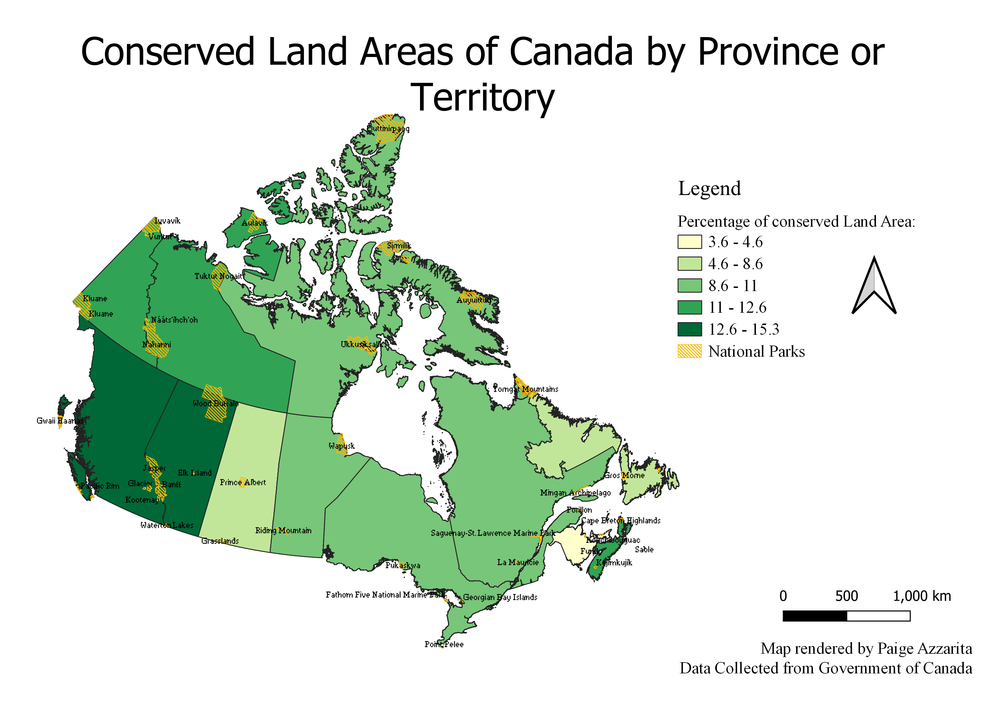

Homework 9: Choropleth or Proportional symbol map
Paige Azzarita
The map below depicts the percentage of conserved land area for each province or territory in Canada as a chloropleth map using natural breaks. The vecotr dataset overlaid depicts Canada's national parks boundaries to be used as a comparison for the amount of area conserved as a park territory to the amount of land conserved by other means. I chose this dataset becuase I thought it would be interesting to try to find data outside of the United States, but I still wanted to be able to understand the language of the website for the data source. I chose to focus on land conservation because I am very interested in wildlife and animal conservation, but also knew that there is a lot of politics surrounding the protected land areas for indigeneous groups in Canada, so I wanted to be able to spatially compare the space of conservation.

Data used for this project:
Clean CSV Dataset
Link to CSV Source
Canada boundary shapefile
National Parks shapefile
Link to national parks shapefile source